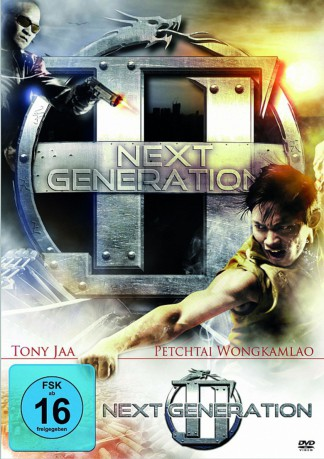

#5700 TJ - Next Generation
 
 IMDB-Wertung: 5.6 / 10
IMDB-Wertung: 5.6 / 10  Metascore: 0
Metascore: 0 
Mittlerweile hat es der Bodyguard Khom (P. Wongkamlao) geschafft und hat einen Job bei der Regierung. In deren Auftrag soll er die Terrororganisation GSRM unschädlich machen, die sich zur Aufgabe gemacht hat, eine Massenvernichtungswaffe zu schaffen. Undercover schleust er sich in die Organisation ein und erfährt so mehr über die Hintergründe und Machenschaften, aber auch das dies nur die Spitze des Eisberges zu sein scheint...
Jahr: 2007
Dauer: 94 Minuten
FSK: 16
Land: Thailand Studio: Ascot Elite Home EntertainmentTonspuren:
Untertitel:
Auflösung: 720p (1280x720) Größe: 4198 MB
Genre: Action, Komödie
Regisseur: Petchtai Wongkamlao
Drehbuch: Alan Schoolcraft
Soundtrack:
Darsteller:
 Petchtai Wongkamlao als Khum Lhau
Petchtai Wongkamlao als Khum Lhau- Garrett Brawith als Additional Voices
- Erich Fleshman als Dude
 Philip Hersh als Additional Voices, English Dub
Philip Hersh als Additional Voices, English Dub Tony Jaa als
Tony Jaa als  Ron Smoorenburg als Gang leader
Ron Smoorenburg als Gang leader- Conan Stevens als Big Security Guard , uncredited
- Jacqueline Apitananon als Paula
- Janet Khiew als Khiew
- Surachai Sombutchareon als Hia Surachai
- Sushin Kuan-Saghaun als Hia Sushin
- Choosak Iamsook als
- Pongsak Pongsuwan als
- Jonathan Samson als
- Saisin Wongkhamlao als
Datei: X:\HD-Eastern-Modern(N-Z)\TJ - Next Generation (2007, FSK16, 1280x720).mkv seit 10.03.2017
Festplatte: HD Eastern+Western
 Es gibt insgesamt 76 Filme in der Gruppe 'HD-Eastern-Modern(N-Z)'
Es gibt insgesamt 76 Filme in der Gruppe 'HD-Eastern-Modern(N-Z)'